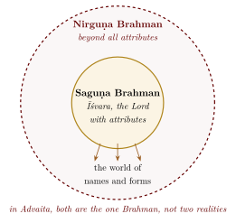
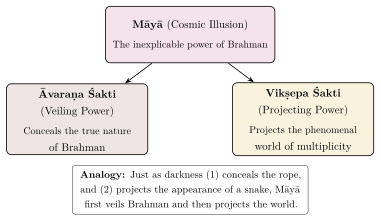
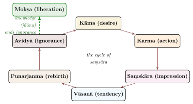
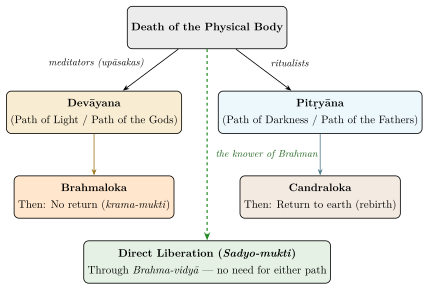

Chapter 6: Core Philosophical Doctrines¶
6.1 Introduction: The Doctrines and Their Systematisers¶
The Upaniṣads do not present a single doctrine but a set of interconnected and sometimes divergent teachings. Later Vedānta drew from them five central doctrines: Brahman (the ultimate reality), Ātman (the self), māyā (the power by which the one appears as many), karma (action and its consequences), and mokṣa (liberation). Two cautions are needed. First, these doctrines are developed unevenly in the Upaniṣads themselves: Brahman, Ātman, karma and liberation are pervasive, whereas māyā occurs only a few times, chiefly in the Śvetāśvatara. Second, the systematic shape given to them below is largely that of Advaita Vedānta, the school that did most to systematise them; where Viśiṣṭādvaita and Dvaita differ, this is noted in each section, and their positions are treated as wholes in Chapter 11. The chapter ends with the earliest and sharpest critics of the Upaniṣadic self, the Buddhists and the Jains.
6.2 Brahman: The Ultimate Reality¶
6.2.1 The Concept of Brahman¶
The word Brahman is usually derived from the root bṛh (to grow, to expand). In the older Vedic texts it means the sacred formula and its power; in the Upaniṣads it becomes the name of the ground of all that exists. The Upaniṣads describe Brahman as that from which the world arises, in which it lives and into which it dissolves, and in many passages as one, without a second, all-pervading and self-luminous. Whether Brahman is an impersonal reality or a personal Lord is the question on which the later schools divided.
yato vā imāni bhūtāni jāyante / yena jātāni jīvanti / yat prayanty abhisaṃviśanti / tad vijijñāsasva / tad brahma
Translation: “That from which all beings are born, that by which, once born, they live, and that into which, upon departing, they enter — seek to know That. That is Brahman.”
— Taittirīya Upaniṣad 3.1
6.2.2 Nirguṇa and Saguṇa Brahman¶
The Upaniṣads describe Brahman both with and without attributes. Advaita systematised this as a distinction between Nirguṇa Brahman (Brahman without attributes) and Saguṇa Brahman (Brahman with attributes) (Table 6.1 and Figure 6.1). Rāmānuja and Madhva reject the distinction as Advaita draws it: for them the texts that deny qualities to Brahman deny only bad or limiting qualities, and Brahman is the Lord with infinite auspicious attributes.
| Aspect | Nirguṇa Brahman | Saguṇa Brahman |
|---|---|---|
| Nature | Without qualities; transcendent | With qualities; accessible to devotion |
| Description | Neti neti (not this, not this) | Omniscient, omnipotent, all-compassionate |
| Knowledge type | Parā vidyā (higher knowledge) | Aparā vidyā (lower knowledge) |
| Approach | Jñāna (knowledge), nididhyāsana | Bhakti (devotion), Upāsanā (meditation) |
| Upaniṣadic ref. | Bṛhadāraṇyaka 3.9.26 | Chāndogya 3.14.2 |
| Result | Sadyo-mukti (immediate liberation) | Krama-mukti (gradual liberation) |

6.2.3 Brahman as Sat-Cit-Ānanda¶
The compound Sat-Cit-Ānanda (Being-Consciousness-Bliss) does not appear as a single phrase in the principal Upaniṣads. It is a later formula assembled from Upaniṣadic passages: sat from the Chāndogya’s “in the beginning, Being alone was, one without a second” (sad eva somyedam agra āsīd ekam evādvītīyam, 6.2.1); cit from the Aitareya’s “consciousness is Brahman” (prajñānaṃ brahma, 3.1.3); and ānanda from the Taittirīya’s “he understood: bliss is Brahman” (ānando brahmeti vyajānāt, 3.6).
The identification of Brahman with bliss had several consequences in Vedāntic thought. If bliss is the nature (svarūpa) of reality rather than a passing emotion, then the goal of life is not to acquire happiness from outside but to discover the bliss that is already one’s nature; the Taittirīya’s scale of bliss (Section 3.3.4) makes every lesser happiness a fraction of it. And if all beings share in the same bliss, then harming any being is, in the end, harming oneself, a metaphysical ground that later teachers gave for non-violence (ahiṃsā). Western philosophy offers partial parallels — Plato’s Form of the Good, Plotinus’s union with the One, Spinoza’s beatitudo — but none quite makes the claim that bliss is the nature of reality itself.
6.2.4 The Apophatic Method: Neti Neti¶
Alongside these positive descriptions stands the negative method of Yājñavalkya in the Bṛhadāraṇyaka (2.3.6; Section 1.16.3). Since Brahman transcends all conceptual categories, it cannot be described by any finite predicate, and the seeker proceeds by negating everything that Brahman is not:
athāta ādeśo neti neti / na hy etasmād iti nety anyat param asti
Translation: “Now therefore the description (of Brahman): ‘Not this, not this.’ For there is nothing else beyond this ‘not this.’ ”
— Bṛhadāraṇyaka Upaniṣad 2.3.6
In Advaita the method is not a denial of Brahman’s existence but an affirmation of its transcendence. As Śaṅkara explains in his commentary, the negation applies only to the limiting adjuncts (upādhis) superimposed on the Ātman — body, mind, intellect, ego, the world of the senses and of dreams — not to the Ātman itself. When all superimpositions have been negated, what remains is not nothing but the self-luminous witness-consciousness that was present all along.
Apophatic and Cataphatic Approaches Compared
The Upaniṣads describe Brahman both positively (the cataphatic way) — as sat, cit, ānanda, as truth, knowledge and infinity — and negatively (the apophatic way), by neti neti. The commentators take the two as complementary: the positive terms point to what Brahman is in its own nature, and the negations show that Brahman is not limited to any conceptual description.
6.2.5 The Taittirīya’s Definition of Brahman¶
The Taittirīya’s definition — satyaṃ jñānam anantaṃ brahma, “Brahman is truth, knowledge, infinity” (2.1.1, quoted in full in Section 3.3) — became a test case for the schools. Śaṅkara’s commentary explains that the three words, though grammatically qualifiers (viśeṣaṇas), do not here add properties to Brahman: their purpose is definition (lakṣaṇa), pointing to Brahman’s own nature (later Advaita calls this a svarūpa-lakṣaṇa). Each word distinguishes Brahman from what it is not:
Satyam (Truth/Reality) — distinguishes Brahman from everything unreal or illusory
Jñānam (Knowledge/Consciousness) — distinguishes Brahman from all insentient matter
Anantam (Infinity) — distinguishes Brahman from everything finite and limited
Rāmānuja, discussing the same sentence in the Śrībhāṣya, draws the opposite conclusion. Words with different meanings that refer to one thing (sāmānādhikaraṇya) show that the one Brahman really possesses several attributes; a sentence made of words that all meant the same bare essence would convey nothing.
6.3 Ātman: The Self¶
6.3.1 The Concept of Ātman¶
While Brahman refers to the ultimate reality viewed cosmically, as the ground of the universe, Ātman refers to the self viewed individually, as the innermost essence of each being. The central claim of many Upaniṣadic passages is that the two are one: “this self is Brahman” (ayam ātmā brahma, Māṇḍūkya 2; Section 5.6). Advaita takes the claim as strict identity; the theistic schools take it as the inseparable relation of the self to the Lord who dwells within it.
The Ātman is described as:
-
Self-luminous (svayaṃjyotiḥ): It shines by its own light; it is not illumined by anything external (Bṛhadāraṇyaka 4.3.9).
-
The Witness (sākṣin): It is the witness of all experience — waking, dreaming, and deep sleep.
-
Unchanging (nityam): While the body, mind, and intellect undergo constant change, the Ātman remains ever the same.
-
Unaffected (asaṅga): Untouched by the experiences of the body-mind complex. The Chāndogya (4.14.3) uses the image of water that does not cling to a lotus leaf: “so evil action does not cling to one who knows this” (Figure 6.2).

The Taittirīya’s model of the five “selves” or sheaths (pañca-kośa), through which the student is led inward from the body to bliss, was discussed in Section 3.3. In Advaita the Ātman is none of the five sheaths, nor their sum, but the witness (sākṣin) that illumines each of them.
6.3.2 The Ātman in Yājñavalkya’s Teaching¶
The most extended discussion of the Ātman in the Upaniṣads is in Yājñavalkya’s teachings in the Bṛhadāraṇyaka, particularly in his dialogues with Maitreyī (2.4 and 4.5) and with King Janaka (4.3–4.4). To Maitreyī he gives the image of a lump of salt dissolved in water:
sa yathā saindhavakhilya udake prāsta udakam evānuvilīyeta / na hāsyodgrahaṇāyeva syāt / yato yatas tv ādadīta lavaṇam eva / evaṃ vā ara idaṃ mahad bhūtam anantam apāraṃ vijñānaghana eva
Translation: “As a lump of salt thrown into water dissolves and cannot be taken out again, yet wherever one tastes the water it is salty — even so, this great being, infinite and boundless, is a mass of consciousness alone.”
— Bṛhadāraṇyaka Upaniṣad 2.4.12
This analogy conveys that the Ātman is not located in any particular part of the body or experience; it pervades the entire field of experience, just as salt pervades the water. It cannot be extracted as a separate object because it is the very medium in which all experience occurs.
6.4 Creation and Causation¶
6.4.1 The Upaniṣadic Cosmogonies¶
The Upaniṣads give several accounts of the origin of the world. Historically they reflect different strands of speculation, some inherited from the Vedic hymns and Brāhmaṇas. Later Vedānta, and Advaita in particular, read them as complementary teaching devices that lead the student from a dualistic picture of creation towards the recognition that there is only the one Brahman appearing as the many (Table 6.2).
In the Muṇḍaka (1.1.8–9) Brahman “grows” by tapas — literally heat, and austerity — and from it come food, breath, mind and the worlds; the text itself adds that the omniscient one’s tapas “consists of knowledge” (1.1.9), which is why the commentators read the word as the concentrated power of consciousness. In the Aitareya (1.1.1–2; Section 3.4) and the Chāndogya (6.2.3) creation follows an act of thought or will (īkṣaṇa): the self, or Being, “thought, let me create the worlds”, “let me become many”. In the Śvetāśvatara (4.9–10) the Lord is the wielder of māyā, the creative power through which the manifold world appears; Advaita later read this as illusory projection. The Taittirīya (2.1) describes a sequence of emanation: from the self came space (ākāśa), from space wind, from wind fire, from fire water, from water earth. This scheme of the five elements was taken up throughout later Indian cosmology. Finally Gauḍapāda, in his Kārikā on the Māṇḍūkya, declares that no creation has ever occurred (ajāti-vāda): the appearance of creation is like the apparent circle traced by a whirling firebrand (Section 3.2.5).
| Model | Source | Mechanism | Status in Advaita |
|---|---|---|---|
| Tapas model | Muṇḍaka | Heat or austerity, read as the power of knowledge | Provisional (vyāvahārika) |
| Volitional model | Aitareya, Chāndogya | The self’s thought or intention (īkṣaṇa) | Provisional |
| Māyā model | Śvetāśvatara | The Lord’s creative power (māyā); read as illusory projection in Advaita | Explanatory |
| Emanation model | Taittirīya | Sequential emergence of elements | Provisional |
| Non-origination | Māṇḍūkya Kārikā | No creation; appearance only | Ultimate (pāramārthika) |
Śaṅkara reconciles these accounts through the distinction between two standpoints. At the empirical level (vyāvahārika), creation appears real and can be described through various models; at the ultimate level (pāramārthika), there is no creation, no destruction, no bondage and no liberation — only the non-dual Brahman. The creation stories are thus provisional attribution (adhyāropa) followed by negation (apavāda) (Section 11.4.3). For Rāmānuja and Madhva, by contrast, creation is real: the world is either the body of Brahman, transformed from a subtle to a gross state, or a real product of God’s will distinct from him.
6.4.2 The Doctrine of Causation: Sat-Kārya-Vāda¶
The Chāndogya (6.1) states what later philosophers called sat-kārya-vāda — the doctrine that the effect pre-exists in the cause:
yathā somyaikena mṛtpiṇḍena sarvaṃ mṛnmayaṃ vijñātaṃ syāt / vācārambhaṇaṃ vikāro nāmadheyaṃ / mṛttikety eva satyaṃ
Translation: “Just as by knowing one lump of clay, all things made of clay are known — the modification being a mere verbal distinction, a name — the clay alone is real.”
— Chāndogya Upaniṣad 6.1.4
The passage makes three claims: the cause alone is ultimately real, the effects being modifications (vikāras) that are mere names (nāmadheyam); by knowing the cause (Brahman), all effects (the manifold world) are known; and the diversity of the world is vācārambhaṇam, a verbal handle, dependent on language and naming.
Scholarly Note
The three analogies employed by Uddālaka in Chāndogya 6.1.4–6 — a lump of clay and things of clay, a copper trinket (lohamaṇi, which Śaṅkara takes as gold) and things of copper, a nail-cutter and things of iron — became the starting point of every later Vedāntic discussion of causation. Advaita, especially after Śaṅkara, developed it into vivarta-vāda, the doctrine that the effect is an apparent transformation of the cause, not a real change in it. Rāmānuja understood it as a real transformation (pariṇāma) of Brahman’s body, the world of souls and matter, with Brahman’s own nature unchanged. The same passage thus supports a whole spectrum of positions.
6.5 Māyā: Creative Power and Appearance¶
6.5.1 From Vedic Power to Vedāntic Appearance¶
The word māyā has a long history before Advaita. In the Ṛgveda it means wondrous power or magical creative ability, often the power to take on many forms, which could be used to deceive (Indra “goes about in many forms by his māyās”, Ṛgveda 6.47.18), but not yet the illusoriness of the world. In the Upaniṣads the term appears in a verse of the Śvetāśvatara:
māyāṃ tu prakṛtiṃ vidyān māyinaṃ tu maheśvaram
Translation: “Know that Prakṛti (Nature) is Māyā, and the great Lord is the wielder of Māyā.”
— Śvetāśvatara Upaniṣad 4.10
Here māyā is the Lord’s creative power, identified with primal matter (prakṛti). In Śaṅkara and his successors it becomes the principle of apparent duality in a non-dual reality (Table 6.3).
| Period | Text/Thinker | Meaning of Māyā |
|---|---|---|
| Vedic | Ṛgveda | Wondrous, shape-changing power of the gods (and demons), sometimes used to deceive |
| Upaniṣadic | Śvetāśvatara | The Lord’s creative power (śakti) that projects the world |
| Systematic Vedānta | Śaṅkara and successors | The beginningless principle of cosmic ignorance; neither real nor unreal (the equation of māyā with avidyā is made explicit by Śaṅkara’s successors) |
| Post-Śaṅkara | Later Advaita | Distinguished into mūlāvidyā (root ignorance) and tūlāvidyā (derivative ignorance) |
Śaṅkara describes name-and-form as “indeterminable as either identical with or different from” Brahman (tattvānyatvābhyām anirvacanīya, commentary on Brahmasūtra 2.1.14); his successors made indeterminability (anirvacanīyatā) the defining mark of māyā. On this view māyā is neither real, since it is contradicted by the knowledge of Brahman, nor unreal, since it produces the appearance of the world; the world is accordingly mithyā, “false” in the technical sense of being neither real nor unreal.
6.5.2 What Māyā Means in Advaita¶
The Advaita doctrine is often misunderstood, and Table 6.4 sets out what it does and does not claim. Later Vedāntic philosophy also distinguished two powers of māyā, one that veils and one that projects (Figure 6.3).
| Māyā Does NOT Mean… | Māyā DOES Mean… |
|---|---|
| The world is a mere hallucination | The world is a real appearance with no ultimate substance |
| Nothing exists | The phenomenal world exists at the empirical level (vyavahārika) but not at the absolute level (pāramārthika) |
| Life is meaningless illusion | The world is the creative play (līlā) of Brahman |
| Passive nihilism | Active engagement in the world with the understanding that Brahman alone is ultimately real |

The theistic schools rejected the Advaita doctrine. Rāmānuja’s Śrībhāṣya sets out a series of objections to an ignorance that is neither real nor unreal — on what does it rest, what does it conceal, how can it be removed — and reads the Śvetāśvatara’s māyā as the Lord’s real and wonderful power of creation. Madhva holds the world to be fully real. The doctrine of māyā is therefore a reading of the Upaniṣads, not a teaching that all their interpreters found in them.
6.6 Karma and Rebirth¶
6.6.1 Karma in the Upaniṣadic Framework¶
The oldest Upaniṣads contain the earliest extended statements in Indian literature of the doctrine that a person is reborn according to his actions; the Ṛgveda knows an afterlife but not a cycle of rebirth governed by moral causation. Whether these passages are older than the Buddha, and whether the doctrine arose within the Brahmanical tradition, is debated (Section 1.12). The Bṛhadāraṇyaka roots action in desire: “a person consists of desire; as is his desire, so is his resolve; as is his resolve, so is the action he performs; and as is the action he performs, so does he become” (4.4.5). Later Indian philosophy added the vocabulary of latent impressions (saṃskāras, vāsanās) to explain how actions bind the individual to the cycle of birth and death (saṃsāra); Figure 6.4 combines the Upaniṣadic core with that later vocabulary.
yathākārī yathācārī tathā bhavati / sādhukārī sādhur bhavati / pāpakārī pāpo bhavati / puṇyaḥ puṇyena karmaṇā bhavati / pāpaḥ pāpena
Translation: “As one acts, as one behaves, so does one become. The doer of good becomes good; the doer of evil becomes evil. One becomes virtuous by virtuous action, sinful by sinful action.”
— Bṛhadāraṇyaka Upaniṣad 4.4.5

Later Vedānta distinguishes three types of karma: the accumulated store of past actions from earlier births (sañcita); the portion of it that has begun to bear fruit in the present life (prārabdha); and the new actions performed in the present life (āgāmī or kriyamāṇa).
6.6.2 The Two Paths After Death: Devāyana and Pitṛyāna¶
The Chāndogya Upaniṣad (5.10) and the Bṛhadāraṇyaka Upaniṣad (6.2) describe two paths that the soul may take after death, taught by the king Pravāhaṇa Jaivali (Section 4.5):
The Path of the Gods (Devāyana): For those who have attained knowledge (vidyā) and practised meditation (upāsanā). This path leads progressively through the realms of fire, day, bright fortnight, the six months of the northern course of the sun, the year, the sun, the moon, and lightning, until the soul reaches Brahman and does not return.
The Path of the Ancestors (Pitṛyāna): For those who have performed sacrificial rites and charitable acts but have not attained knowledge. This path leads through smoke, night, dark fortnight, the six months of the southern course of the sun, and the world of the ancestors, to the moon. After enjoying the fruits of their meritorious actions, they return to earthly existence through space, wind, rain, plants and food, and are reborn.
Those who know neither path, the Chāndogya adds, are born again and again as small creatures (5.10.8). Later Vedānta adds a further possibility: the one who knows Brahman here is liberated without travelling either path (Figure 6.5). The doctrine of the two paths has a clear consequence for practice: meritorious action leads to rebirth in good circumstances, but it does not end the cycle of birth and death; only knowledge does. This is the basis of the Upaniṣadic preference for the path of knowledge over the path of ritual action — not because action is worthless, but because action without knowledge cannot end the cycle of becoming.

6.7 Mokṣa: Liberation¶
6.7.1 The Goal¶
Mokṣa (liberation, release) is the highest goal (parama-puruṣārtha) that the Upaniṣads hold out: freedom from the cycle of birth and death (saṃsāra) through knowledge of the self. The texts describe it in several ways — as going to Brahman by the path of the gods, as becoming Brahman, as union with the Lord — and the schools built on different descriptions. For Advaita, liberation is not a future event but the recognition of a truth that has always been the case: the Ātman has never been bound and only appears bound through ignorance (avidyā), so liberation is the removal of a false cognition rather than the production of a new state. For Rāmānuja and Madhva it is a real change in the soul’s condition, given by the Lord’s grace, in which the soul enjoys the presence of God for ever (Table 6.5).
sa yo ha vai tat paramaṃ brahma veda brahmaiva bhavati
Translation: “Whoever truly knows that supreme Brahman, becomes Brahman indeed.”
— Muṇḍaka Upaniṣad 3.2.9
| Type | Sanskrit Term | Description |
|---|---|---|
| Liberation while living | Jīvanmukti | The individual realises Brahman while still embodied; actions continue but create no new bondage |
| Liberation at death | Videhamukti | The body falls away at the exhaustion of prārabdha karma; no further rebirth occurs |
| Gradual liberation | Krama-mukti | The soul attains the world of Brahmā through the Devāyana path and is eventually liberated there |
| Immediate liberation | Sadyo-mukti | Instantaneous liberation upon the dawn of knowledge; characteristic of the Advaita tradition |
6.7.2 Jīvanmukti: Liberation While Living¶
The idea of jīvanmukti — liberation attained while still living in the body, not after death — is one of the most distinctive of the Vedāntic tradition. The term itself does not occur in the principal Upaniṣads; it was developed in the Advaita tradition, culminating in Vidyāraṇya’s Jīvanmuktiviveka (14th century). The idea draws on passages such as Kaṭha 2.3.14 (= Bṛhadāraṇyaka 4.4.7): “When all the desires that dwell in the heart are cast away, then a mortal becomes immortal and attains Brahman here.”
bhidyate hṛdaya-granthiś chidyante sarva-saṃśayāḥ | kṣīyante cāsya karmāṇi tasmin dṛṣṭe parāvare
Translation: “The knot of the heart is cut asunder, all doubts are destroyed, and all karmas perish when That which is both the higher and the lower is seen.”
— Muṇḍaka Upaniṣad 2.2.8
The jīvanmukta continues to live in the world until the karma that produced the present body is exhausted, like a potter’s wheel that goes on spinning after the potter has stopped turning it — an image best known from the Sāṅkhyakārikā (67) and adopted by Advaita. Drawing on these passages and on the Gītā’s portrait of the person of steady wisdom (sthita-prajña, BG 2.55–72), later Vedānta describes the liberated person as free from desire, since nothing is lacking to one who has realised the fullness of the self; as even-minded in pleasure and pain, praise and blame; as acting for the welfare of all beings (sarva-bhūta-hita), because the same self is seen in all; and as acting rightly from that understanding rather than from external rule. Modern readers have compared this ideal with virtue ethics and with humanistic psychology’s “self-actualisation”; the Vedāntic version differs in grounding compassion not in empathy but in the recognition that all beings share a single self.
Scholarly Note: Mokṣa in Cross-Cultural Perspective
Comparisons between mokṣa and “salvation” in the Abrahamic religions are often drawn too sharply. It is true that Advaita understands liberation as the result of knowledge, as the transcendence of individual identity and as achievable in this life, whereas mainstream Christian and Islamic theology speak of salvation through divine grace with the individual preserved in the hereafter. But each side contains the other’s emphasis: the theistic Vedānta of Rāmānuja and Madhva, and the bhakti traditions generally, stress grace and the eternal individuality of the liberated soul, while Christian mysticism and Sufism speak of union with or annihilation in God. The real contrast lies as much within the traditions as between them.
6.8 The Doctrine of the Three Bodies (Tri-Śarīra)¶
6.8.1 The Gross, Subtle, and Causal Bodies¶
Building upon the pañca-kośa model of the Taittirīya, the later Vedāntic tradition — drawing on passages from the Bṛhadāraṇyaka, Māṇḍūkya, and other Upaniṣads — developed the doctrine of the three bodies (tri-śarīra), which provides a systematic framework for understanding the relationship between the Ātman and its apparent embodiments.
The sthūla śarīra (gross body) is the physical body composed of the five gross elements (pañca-mahābhūtas). It is the vehicle of waking-state experience and is subject to birth, growth, disease, decay, and death. The sūkṣma śarīra (subtle body) consists of the five vital breaths, the five sense organs, the five organs of action, the mind, and the intellect — seventeen components in all. It is the vehicle of dream-state experience and persists through the cycle of rebirth, carrying the individual’s karmic impressions (saṃskāras) from one life to the next. The kāraṇa śarīra (causal body) is the formless seed-state of ignorance (avidyā) that is the root cause of both the subtle and gross bodies. It is the vehicle of deep-sleep experience (Table 6.6).
| Body | Kośas included | State | Characteristics |
|---|---|---|---|
| Sthūla (Gross) | Annamaya | Jāgrat (Waking) | Physical body; subject to birth and death; composed of food |
| Sūkṣma (Subtle) | Prāṇamaya, Manomaya, Vijñānamaya | Svapna (Dream) | 17 components; carries saṃskāras; transmigrates between births |
| Kāraṇa (Causal) | Ānandamaya | Suṣupti (Deep Sleep) | Root ignorance (avidyā); beginningless; destroyed only by knowledge |
| Ātman (Beyond) | None — witness of all | Turīya (The Fourth) | Self-luminous; unborn; the real identity of the individual |
6.8.2 The Three States and the Three Bodies¶
In this framework each state of consciousness is correlated with a body: waking consciousness operates through the gross body, dream consciousness through the subtle body, and deep-sleep consciousness through the causal body. The Fourth (Turīya) is the Ātman itself, the witness of all three bodies and all three states but identical with none of them. The ordinary person identifies with whichever body is active — “I am this body” in waking, “I am this dreamer” in dream. For Advaita this identification is an error (adhyāsa); one’s true identity is the witnessing awareness that remains constant through all states and all bodies. The scheme is an Advaita systematisation; the theistic schools do not accept a “causal body” made of ignorance in the Advaita sense.
The Concept of Adhyāsa (Superimposition) in Śaṅkara’s Philosophy
Śaṅkara’s introduction (adhyāsa-bhāṣya) to his commentary on the Brahma Sūtras identifies adhyāsa (superimposition) as the fundamental error that underlies all human suffering and bondage. Adhyāsa is defined as the apparent presentation, in the form of memory, of something previously experienced in something else — specifically, the mutual superimposition of the Self (Ātman) and the not-Self (body, mind, ego).
This superimposition operates in two directions:
-
Superimposition of the not-Self on the Self: One attributes to the Ātman the properties of the body — “I am fat,” “I am old,” “I am a man/woman.”
-
Superimposition of the Self on the not-Self: One attributes to the body the properties of the Ātman — “This body is conscious,” “This mind is the knower.”
All worldly transactions (vyāvahāra), including moral conduct, religious ritual, and even the study of the Vedas, presuppose this mutual superimposition. Liberation consists in the cessation of superimposition through the direct knowledge of the distinction between Self and not-Self (ātma-anātma-viveka).
6.9 The Five Doctrines in the Advaita System¶
In the Advaita systematisation the five doctrines form one structure. Brahman is the sole reality. The Ātman is Brahman known from within the individual. Māyā is the indeterminable power that makes Brahman appear as the manifold world and the Ātman as a limited individual. Karma is the mechanism by which the self, deluded by māyā, is entangled in birth and death. And liberation is the recognition that the self was always Brahman, accomplished by knowledge, which dissolves māyā and exhausts karma. Table 6.7 relates the doctrines to the three levels of reality of post-Śaṅkara Advaita. This is the account Advaita reads out of the Upaniṣads; the theistic schools tell it differently, with the individual self and the world real and dependent on the Lord, and liberation as communion with him.
| Level | What Appears | Relevant Doctrines |
|---|---|---|
| Pāramārthika (Absolute) | Brahman/Ātman alone | Brahman, Ātman (identical); Mokṣa as recognition |
| Vyāvahārika (Empirical) | The manifold world of name and form | Māyā (veiling and projecting), Karma (action-consequence cycle) |
| Prātibhāsika (Illusory) | Snake on a rope; silver in a shell | Māyā at its most distorted; error of perception |
6.10 The Upaniṣadic Ātman and Its Śramaṇa Critics¶
The Upaniṣadic teaching on the self met its most searching critic in the Buddha, and the exchange between the two traditions lasted more than a thousand years. Buddhist doctrine is set out in Volume 4 (Buddha–Jina Prabhā), which gives the Anattalakkhaṇa Sutta in full, and the philosophical debate between the schools in Volume 3 (Darśana Darpaṇa). This section asks a narrower question: which Upaniṣadic ideas do the early Buddhist texts appear to address, and how did the Vedāntins answer? On the chronology adopted in this volume, the Bṛhadāraṇyaka and Chāndogya are older than the Buddha, and the verse Upaniṣads were taking shape while Buddhism spread (Section 1.12).
6.10.1 What the Early Buddhist Texts Knew¶
The Tevijja Sutta (Dīgha Nikāya 13) is the Pali canon’s most direct engagement with Vedic teachers. Two young brahmins, Vāseṭṭha and Bhāradvāja, dispute which path leads to union with Brahmā (brahmasahabyatā). Each school of brahmins (Adhvaryu, Taittirīya, Chandoga, Bahvṛca) claims that its own path leads there. The Buddha asks whether any brahmin learned in the three Vedas, or any teacher of theirs back to the seventh generation, has seen Brahmā face to face. When the answer is no, he compares their teaching to a file of blind men, each holding on to the one in front and none of them able to see. He then teaches the four “divine abidings” (brahmavihāra). In these the mind is made to pervade every direction with friendliness, compassion, sympathetic joy and equanimity, and this, he says, is the way to companionship with Brahmā. Richard Gombrich reads the sutta as a deliberate ethical reinterpretation of the Brahmanical language of union with brahman (Gombrich 2009). The sutta speaks of a personal god, Brahmā, not of the neuter brahman of the Upaniṣads. This suggests that its authors knew the Upaniṣadic idea at some remove, or chose to treat it in theistic form.
The Alagaddūpama Sutta (Majjhima Nikāya 22) lists among the “standpoints for views” that a disciple must reject the view that “the world is the self”, and that after death one will become that, permanent, stable and eternal. Scholars have often compared this with Śāṇḍilya’s teaching in the Chāndogya (3.14.4). There the self within the heart is declared to be Brahman, the whole of what exists, and the meditator resolves that on departing from here he will merge into it. The Pali names no source, but the structure of the two claims is the same: the self is identified with the all, and union with it is expected after death.
The Kaṭha offers a third point of contact. Naciketas asks Death about the doubt whether a man exists after he has died, “some say he does, others that he does not” (1.1.20). Whether the Tathāgata exists after death is one of the questions the Buddha set aside as undetermined (avyākṛta). Yama answers Naciketas by teaching the unborn, undying self (1.2.18). The Buddha declines to answer, holding the question itself to be wrongly posed.
6.10.2 The Not-Self Argument and the Upaniṣadic Self¶
In the Anattalakkhaṇa Sutta (Saṃyutta Nikāya 22.59) the Buddha examines the five aggregates of the person: form, feeling, perception, formations and consciousness. None of them is the self. If one of them were, it would not lead to affliction, and one could command it to be thus and not otherwise. Each is impermanent, and what is impermanent is unsatisfactory. What is impermanent and unsatisfactory is not fit to be regarded as “this is mine, this I am, this is my self”.
The argument accepts a definition of what a self would have to be, namely permanent, free from suffering and in control, and then shows that nothing in experience meets it. That definition corresponds closely to the Upaniṣadic ātman:
-
it is unborn and undying (Kaṭha 1.2.18);
-
it is beyond hunger and thirst, grief and delusion, old age and death (Bṛhad. 3.5.1);
-
it is the immortal inner controller (antaryāmin) of all things, apart from which, Yājñavalkya adds, “everything else is afflicted” (ārta; Bṛhad. 3.7.23).
Steven Collins accordingly reads the not-self teaching in this Brahmanical setting, as directed against such a conception of the self (Collins 1982).
The method also has an Upaniṣadic precedent. Yājñavalkya too refuses to identify the self with anything that can be pointed to. It is “not this, not this” (Bṛhad. 3.9.26; Section 1.16.3), and one cannot see the seer of seeing (3.4.2). Some modern interpreters have therefore argued that the Buddha denied only that the aggregates are the self, leaving a transcendent self unmentioned rather than rejected.
The conclusions, however, diverge. Yājñavalkya ends with an unseen seer (3.7.23). The Buddhist tradition ends with conditioned processes and no subject behind them. The mainstream of Buddhist scholasticism, from the Abhidharma to Vasubandhu’s refutation of the person in the ninth chapter of the Abhidharmakośabhāṣya, and most modern scholars, read anattā as excluding any permanent self whatever.
The doctrine of karma shows the same pattern of shared ground and divergence. The Bṛhadāraṇyaka already traces action back to the inner life. As one acts, so one becomes; a person consists of desire; as is his desire, so is his resolve; as is his resolve, so is the deed he does; and the deed he does, that he attains (4.4.5; compare Yājñavalkya’s private teaching to Ārtabhāga, 3.2.13). The Buddha’s saying that “intention is karma” (Aṅguttara Nikāya 6.63; Volume 4) carries the internalisation further, placing the moral weight of an act entirely in the intention behind it. Gombrich argues that the Buddha thus completed the “ethicisation” of a concept that had begun as ritual action (Gombrich 2009). He also argues, following Joanna Jurewicz (Jurewicz 2000), that the chain of dependent origination answers the Vedic cosmogonies. In place of a story of how a primal being created the world through desire, mind and heat (as in Bṛhad. 1.2), it gives an account of how suffering arises in each person.
The difference returns at the point of liberation. For the Bṛhadāraṇyaka, the man without desire, whose only desire is the self, does not depart at death but, being Brahman, goes to Brahman (4.4.6). For the Buddha there is no self to be free; there is only the ending of craving.
6.10.3 The Later Debate¶
The exchange continued in the scholastic literature of both sides:
-
Bhāviveka (6th century) devoted the eighth chapter of his Madhyamakahṛdayakārikā, the “Ascertainment of the Truth of Vedānta” (Vedāntatattvaviniścaya), to the Vedāntin doctrine of a single, all-pervading self, and answered it from the Madhyamaka standpoint. This is one of the earliest datable accounts of Vedānta by an outsider (Qvarnström 1989).
-
Śāntarakṣita’s Tattvasaṅgraha (8th century) includes, in its examination of theories of the self, a section on the self of the “followers of the Upaniṣads” (aupaniṣadika). It argues that a single, eternal consciousness cannot account for the variety and succession of actual cognitions.
-
On the Vedāntin side, Gauḍapāda’s Kārikā engages Buddhist arguments closely (Section 3.2.5).
-
Śaṅkara refutes the Buddhist realists and idealists, and dismisses the doctrine of emptiness, in his commentary on Brahmasūtra 2.2.18–32. His central reply to the denial of the self comes elsewhere, under 2.3.7. The self cannot be refuted, because it is the ground of every act of knowing, including the act of refutation; “the one who denies it is its very nature”.
Later Vaiṣṇava and Sāṅkhya critics nevertheless called Advaita “Buddhism in disguise” (pracchanna-bauddha). The charge shows how close the two negative methods looked from outside. The Advaitin’s reply is that the Buddhist negation leaves nothing behind, whereas the Upaniṣadic negation leaves the witness that performs it (compare Table 5.7). The debate sharpened both sides. The Vedāntins had to say what kind of self survives the analysis of the aggregates: not an object among objects, but the awareness to which all objects appear. The Buddhists had to explain memory, responsibility and rebirth without a self, a task that occupied their philosophers for centuries (Volume 3). Jonardon Ganeri’s study of Indian theories of the self follows these arguments on both sides as philosophy rather than as doxography (Ganeri 2007).
6.10.4 Jain Conceptions of the Self¶
The Jains, the other great śramaṇa tradition, agreed with the Upaniṣads against the Buddhists that there is a self, but disagreed about almost everything else (Volume 4, Buddha–Jina Prabhā) (Dundas 2002). For the Jain canon and its systematisers, souls (jīva) are infinite in number. Each is eternal and conscious by nature, endowed with infinite knowledge, perception, bliss and energy that karma obscures. Karma is not, as in the Upaniṣads, the deed and its unseen result, but a subtle kind of matter that flows into the soul through activity and binds it. Liberation comes when restraint and austerity stop the inflow and wear away what has accumulated; the freed soul rises to the summit of the universe and remains there for ever, individual and omniscient. In embodiment the soul is the size of its body, contracting and expanding as the light of a lamp fills a small or a large room, an image the Jain systematisers use. The Jains reject the authority of the Veda and the idea of a creator God.
The Jain texts also argue against the Upaniṣadic doctrine directly. The Sūtrakṛtāṅga, one of the oldest books of the Śvetāmbara canon, lists among the wrong views of other teachers the doctrine that a single self appears as the whole world, as one heap of earth appears in many forms (Jacobi 1895). Later Jain philosophers, among them the Digambara Samantabhadra (whose date is disputed), criticised the “one-sided” (ekānta) doctrine of non-duality from the standpoint of their own doctrine of many-sidedness (anekāntavāda). A reality that is only one and only unchanging, they argued, leaves no room for bondage and release, for action and its fruit, or for the difference between teacher and pupil. The Jain view thus stands between the two positions examined above: with the Upaniṣads it affirms a permanent self, against them it makes that self plural and individual, and with the Buddhists it holds that liberation is won by one’s own discipline rather than by knowing one’s identity with the all.
Oṃ Śāntiḥ Śāntiḥ Śāntiḥ